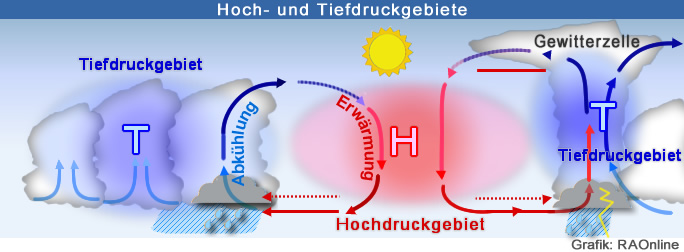
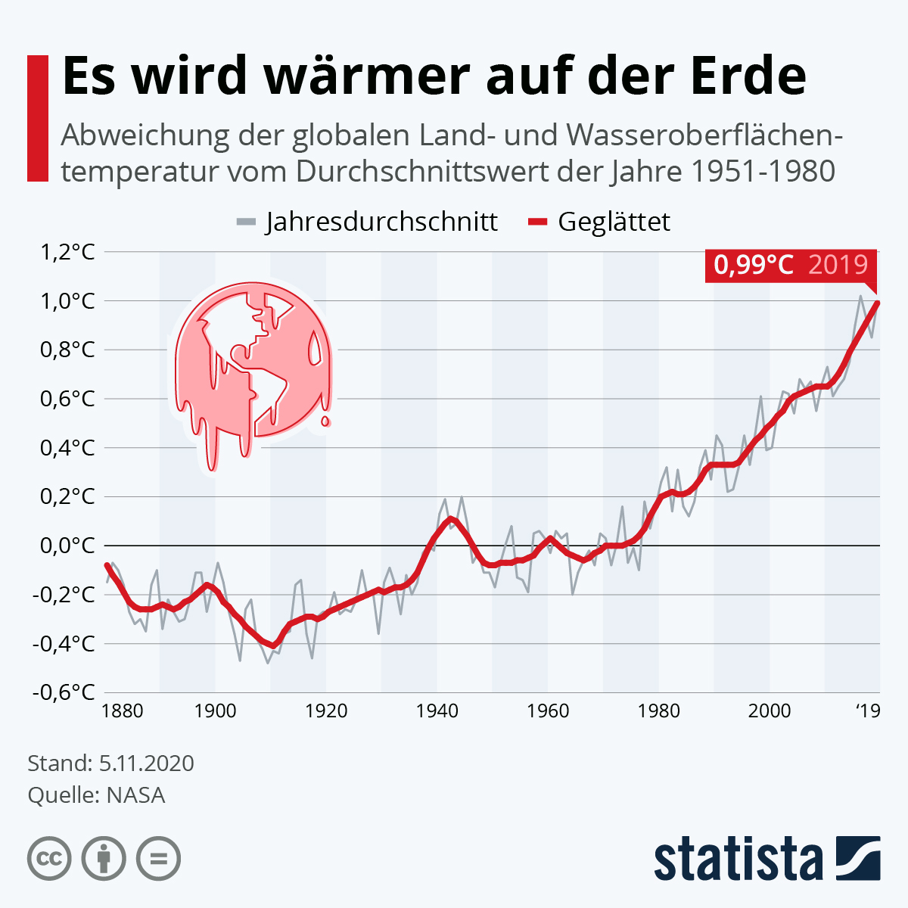
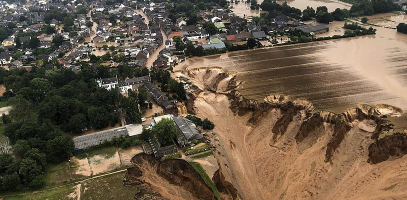
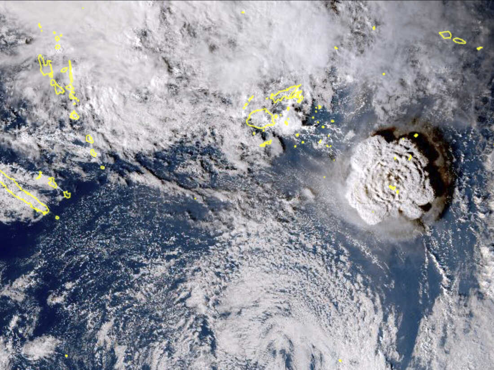
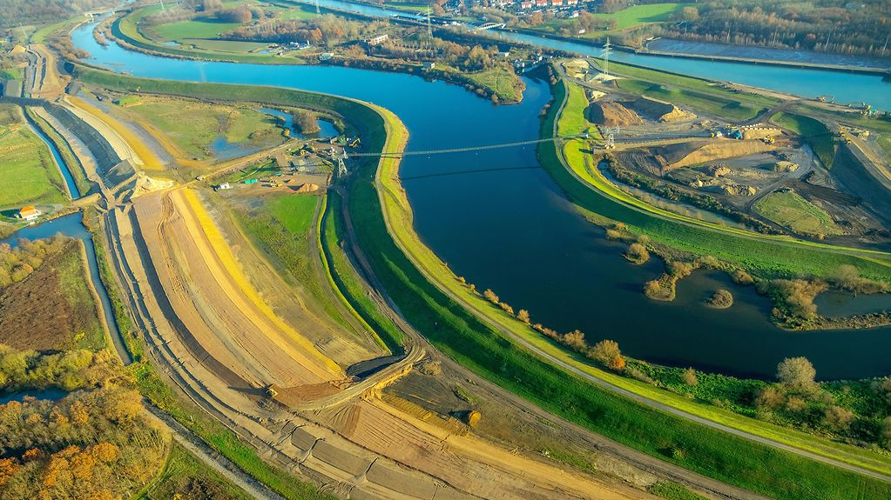

Naturkatastrophen - Extremes Wetter
Ursachen
Extreme Wetterbedingungen können viele Auslöser haben. Hier nur einige von ihnen:
El Niño
El Niño und La Niña haben Auswirkungen auf das Wetter in Europa, indem sie das Muster der Luftdrucksysteme und Jetstreams beeinflussen. Wenn El Niño auftritt, kann es dazu führen, dass der Jetstream weiter nach Norden verlagert wird, was wärmere und trockenere Winterbedingungen in Europa verursachen kann. La Niña hingegen kann dazu führen, dass der Jetstream weiter südlich verläuft und kältere und niederschlagsreichere Bedingungen in Europa verursachen kann.
Luftdrucksysteme
Tiefdruckgebiete und Hochdruckgebiete haben einen großen Einfluss auf das Wetter in Europa und können Extremwetterereignisse verursachen.
Tiefdruckgebiete sind Gebiete mit niedrigem Luftdruck im Vergleich zu den umgebenden Gebieten. Sie sind in der Regel mit schlechtem Wetter wie Regen, Wind und schlechter Sichtbarkeit verbunden. Tiefdruckgebiete können auch Stürme verursachen, insbesondere wenn sie schnell bewegen oder sich zu Wirbelstürmen entwickeln.
Hochdruckgebiete sind Gebiete mit hohem Luftdruck im Vergleich zu den umgebenden Gebieten. Sie sind in der Regel mit gutem Wetter wie Sonnenschein und trockenen Bedingungen verbunden. Hochdruckgebiete können auch Wärmewellen verursachen, insbesondere wenn sie längere Zeit an einem Ort verweilen
{kind=link}

Wie entstehen Luftdrucksysteme?
Kaltluftausbrüche
Kaltluftausbrüche sind ein natürliches Phänomen und können zu ungewöhnlich kalten Temperaturen, Schnee und Eisregen führen, insbesondere in den Wintermonaten. Sie können auch zu starkem Wind und geringer Sichtbarkeit führen und die Verkehrs- und Reisebedingungen beeinträchtigen.
Kaltluftausbrüche sind oft durch das Zusammenspiel von Luftdrucksystemen, Jetstreams und kalten Luftmassen aus dem Norden oder Osten verursacht. Wenn ein Tiefdruckgebiet über Europa verläuft, kann es kalte Luftmassen aus dem Norden oder Osten anziehen und zu einem Kaltluftausbruch führen. Wenn ein Hochdruckgebiet über Europa verläuft, kann es die kalte Luftmassen einschließen und somit Kaltluftausbrüche verhindern.
Jetsreams
Jetstreams sind starke westliche Windströmungen in der oberen Atmosphäre, die das Wetter in Europa beeinflussen können. Sie können dazu beitragen, dass Tiefdruck- und Hochdruckgebiete sich schneller bewegen und dadurch das Wetter in Europa verändern.
Ein Jetstream der nach Norden verlagert ist, kann dazu führen dass, Tiefdruckgebiete über Europa verlaufen und dadurch Regen, Wind und schlechtes Wetter verursachen, während ein südlich verlagerter Jetstream, Hochdruckgebiete über Europa verlaufen lässt, was wiederum zu sonnigem und warmem Wetter führen kann.
Wärmewellen
Wärmewellen sind Phänomene, bei denen die Temperaturen über einen längeren Zeitraum signifikant höher sind als üblich. Sie können in Europa durch Hochdruckgebiete verursacht werden, die über eine Region verweilen und dadurch die Sonnenstrahlen und die warme Luft festhalten.
Wärmewellen können zu ungewöhnlich hohen Temperaturen und extremen Hitze führen, was zu gesundheitlichen Problemen, Waldbränden und Dürren führen kann. Sie können auch Auswirkungen auf die Landwirtschaft und die Wasserversorgung haben.
Klimaerwärmung
Klimaerwärmung führt zu einer Erhöhung der Durchschnittstemperatur auf der Erde, was zu Veränderungen in den Wettersystemen führt. Eine Erwärmung der Atmosphäre führt dazu, dass es mehr Wasserdampf in der Luft gibt, was zu heftigeren Niederschlägen und häufigeren Starkregenereignissen führt. Eine Erwärmung der Ozeane führt zu stärkeren und häufigeren Stürmen. Zudem kann die Klimaerwärmung dazu führen, dass bestimmte Wetterphänomene, wie zum Beispiel Hitzewellen, länger andauern und intensiver werden.
{kind=link}

Die Erde erwärmt sich in den letzten Jahren stark. Die Durchschnittstemperatur im Vergleich zu 1880 hat sich um 1 °C erhöht. Auch El Niño und La Niña kommen häufiger vor.
Hochwasser
Definiton
Hochwasser wird der Zustand von Gewässern genannt, bei dem ihr Wasserstand deutlich über dem Pegelstand ihres Mittelwassers liegt. (Wikipedia)
Hochwasser kann auf verschiedene Arten und auf verschiedenen Ebenen genauer beschrieben werden. Eine Möglichkeit ist die Unterscheidung zwischen Flusshochwasser und Überschwemmungen durch Starkregen.
{kind=link}

Das Hochwasser in NRW von 2021 hat gewaltigen Schaden angerichtet. In Zeiten des Klimawandels kann so etwas häufiger passieren.
Beispiele
Flusshochwasser
Flusshochwasser entsteht, wenn die Abflussmenge eines Flusses die Fähigkeit des Flussbetts, das Wasser aufzunehmen, überschreitet. Dies kann durch verschiedene Faktoren verursacht werden, wie zum Beispiel starke Regenfälle, die den Flusspegel ansteigen lassen, oder durch Gletscherschmelze und Schnee, die den Flusspegel erhöhen.
Überschwemmungen durch Starkregen
Überschwemmungen durch Starkregen hingegen, entstehen, wenn das Regenwasser nicht schnell genug abfließen kann und sich in Tälern, auf Straßen und in Gebäuden ansammelt. Dies kann durch eine hohe Bodenversiegelung, durch Verschmutzung von Abflusskanälen oder durch eine unzureichende Entwässerungsinfrastruktur verstärkt werden.
Küstenhochwasser
Des Weiteren gibt es noch die Küstenhochwasser, diese entstehen durch die Kombination von Springflut und Wind, die das Wasser in die Küstengebiete treiben.
Andere Beispiele
Es gibt auch noch andere Arten von Hochwasser, die durch spezifische Faktoren verursacht werden, wie zum Beispiel durch Staudämme oder Deiche, die durch Überlast oder Beschädigung brechen können, oder durch plötzliches Abschmelzen von Schnee und Eis. Es gibt noch weitere Arten von Hochwasser, die auf unterschiedliche Weise entstehen können. Einige Beispiele sind:
-
Überflutungen durch Schmelzwasser: Diese entstehen, wenn das Schmelzwasser von Gletschern oder Schneefeldern schneller abfließt, als es von den Flüssen und Bächen aufgenommen werden kann.
-
Überflutungen durch Dammbruch: Diese entstehen, wenn ein Damm, der das Wasser zurückhält, beschädigt oder zerstört wird und das Wasser plötzlich und unkontrolliert abfließt.
-
Überflutungen durch Rückstau: Diese entstehen, wenn das Abflussvermögen von Flüssen oder Bächen durch z.B. Verschmutzung oder Bebauung beeinträchtigt wird und das Wasser nicht schnell genug abfließen kann, dann kann es in tiefer gelegenen Gebieten zu Überflutungen kommen.
-
Überflutungen durch Tsunamis: Diese entstehen durch unterseeische Erdbeben, Vulkanausbrüche oder Meteoriteneinschläge, die große Mengen von Wasser auf die Küste treiben können und zu schweren Überschwemmungen und Schäden führen können.
{kind=link}

Diese Grafik zeigt einen Tsunami, der auf Hawaii zusteuert. Auch Tsunamis können Überschwemmungen auslösen.
Prävention
Um Hochwasser zu verhindern, gibt es viele Möglichkeiten:
-
Entwicklung von Entwässerungs- und Abflussmanagement-Systemen: Dies kann dazu beitragen, das Regenwasser schneller abzuführen und die Gefahr von Überschwemmungen durch Starkregen zu verringern.
-
Deichbau und Staudamm-Management: Deiche und Staudämme können dazu beitragen, das Risiko von Flusshochwasser zu reduzieren, indem sie das Wasser in Flüssen und Seen zurückhalten. Es ist aber wichtig, dass diese Strukturen sicher und stabil gebaut und gewartet werden.
-
Bewusste Stadtplanung: Durch die Vermeidung von Bodenversiegelung und die Förderung von grünen Räumen in städtischen Gebieten kann dazu beigetragen werden, das Regenwasser besser aufzunehmen und zu filtern und somit die Gefahr von Überschwemmungen zu reduzieren.
-
Erhaltung und Wiederherstellung von natürlichen Feuchtgebieten: Feuchtgebiete können dazu beitragen, das Wasser aufzunehmen und zu speichern und somit die Gefahr von Überschwemmungen zu reduzieren.
-
Anpassung an den Klimawandel: Da der Klimawandel zu häufigeren und heftigeren Niederschlägen und höheren Meeresspiegeln führt, ist es wichtig, die Anfälligkeit für Hochwasser durch die Anpassung von Infrastruktur und die Entwicklung von Notfallplänen zu reduzieren.
Es ist wichtig zu betonen, dass es keine einzige Lösung gibt und eine Kombination von verschiedenen Maßnahmen und Ansätzen notwendig ist, um Hochwasserrisiken effektiv zu reduzieren.
{kind=link}

Auf der Webseite der Bundesregierung werden Möglichkeiten zur Hochwasserprävention gezeigt. Eine davon ist der Bau von Deichen.
Vorbereitung auf Hochwassersituationen
Es gibt verschiedene Möglichkeiten, sich auf ein Hochwasser vorzubereiten. Hier sind einige empfehlenswerte Schritte:
-
Informieren Sie sich über das Risiko von Hochwasser in Ihrer Region und erfahren Sie, welche Art von Hochwasser am wahrscheinlichsten ist.
-
Erstellen Sie einen Notfallplan für den Fall, dass ein Hochwasser eintritt. Dieser sollte Informationen darüber enthalten, wie Sie und Ihre Familie sicher evakuieren können, wo Sie Unterkunft finden können und welche Dokumente und Wertgegenstände Sie mitnehmen sollten.
-
Bereiten Sie eine Notfallausrüstung vor, die Sie im Falle eines Hochwassers benötigen könnten, wie z.B. Wasser, Nahrung, Medikamente, Erste-Hilfe-Ausrüstung und eine Taschenlampe.
-
Schützen Sie Ihr Eigentum, indem Sie es auf eine höhere Etage oder in den Keller bringen oder es mit Sandsäcken oder Flutbarrieren abschirmen.
-
Halten Sie Kontakt mit Ihren Nachbarn und der lokalen Behörde, um sich über aktuelle Entwicklungen und Anweisungen im Falle eines Hochwassers zu informieren.
-
Wenn Sie in einer gefährdeten Gebiet wohnen, informieren Sie sich über die Möglichkeiten von Versicherungen und staatlichen Hilfen, um Ihr Eigentum und Ihre Finanzen im Falle einer Überschwemmung abzusichern.
-
Üben Sie den Notfallplan und machen Sie sich mit dem Verhalten im Falle eines Hochwassers vertraut.
Es ist wichtig, dass man sich auf Hochwassersituationen vorbereitet, da sie schnell und unvorhergesehen eintreffen können und die Auswirkungen oft schwerwiegend sein können. Eine frühzeitige Vorbereitung und ein ausgearbeiteter Notfallplan können dazu beitragen, dass man im Notfall schneller und sicherer reagieren kann.